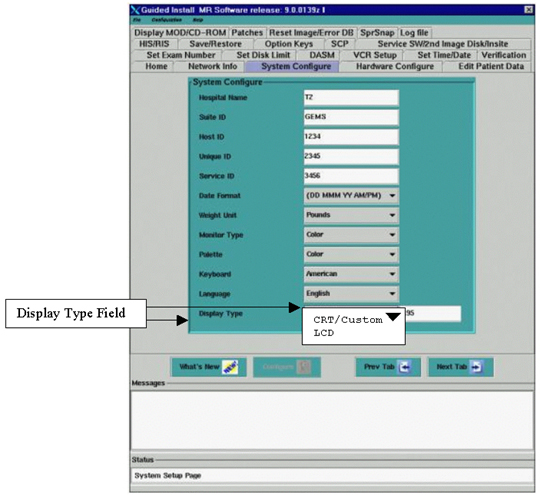
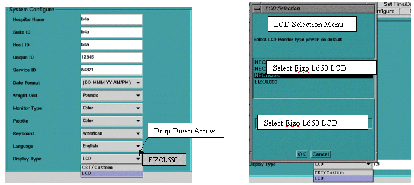

Operating Documentation
Direction 5440001-3, Rev# 6
Signa HDxt Service Methods
Module Version 1.0, Version Date 5/3/07
Operating Documentation |
| Required Persons | Preliminary Reqs | Procedure | Finalization |
|---|---|---|---|
| 1 |
For ALL 10.x Software versions, the Gamma value/LUT is automatically installed during the Software Load Process. A “Pull Down Menu” under [Display Type] under the [System Configure] tab in [Guided Install], presents a menu listing all the current monitor types. Once a monitor is selected, the correct gamma value/LUT is installed automatically.
| NOTE: | FOR ALL 10.X SYSTEMS: ALL GAMMA LOOK-UP-TABLES OR SINGLE GAMMA
VALUES HAVE BEEN ENCORPORATED INTO THE SIGNA SOFTWARE RELEASE. DO NOT LOAD ANY GAMMA LOOK-UP-TABLES FROM THE SERVICE CDROM OR WEBSITE. DOING SO WILL CORRUPT THE SOFTWARE. |
Gamma Configuration 1850X- Setting Gamma For 10.X systems :
To set gamma:
If you are replacing the same model and make of LCD and have not reloaded software: No gamma changes are necessary. Proceed to Subsection 6- LCD Auto Adjustment and OSMTM On Screen Manager Operations.
If you are replacing the same model and make of LCD and have reloaded software: Proceed to Step below:
If you Reloading software or Loading software for the first time: Proceed to Step below:
Open Guided Install and select [System Configure] tab. Refer to Illustration 1.
Look for the “Display Type” field.
Illustration 1: INSTALL GUI “SYSTEM CONFIGURE” TAB- DISPLAY TYPE FIELD

| NOTE: | The “Display Type” Field has two choices:
|
| NOTE: | It may be necessary to “Toggle” between the “CRT/Custom” and “LCD” options in the Display Type Field to select “LCD”. |
If “CRT/Custom” is displayed in the Field:
Click on the “Display Type” Field 
Drag your mouse over LCD.
A Popup Display message will appear. Select [OK] (See Illustration 2).
The Field should change to [LCD].
Select [LCD] again. The menu shown in Illustration 3 will appear:
Scroll to the correct Display option (1880SX) and release the mouse button. The display selected will appear in the box to the right.
Click on the [Configure Button] on the Install GUI to save the changes. You may see a slight change in the screen intensity when “Configure” is complete.
A Popup message box will appear, Select [OK].
Select [File] and [Quit] and [OK] from the Install/Reconfigure GUI Window.
Reboot the System. A reboot is required to activate the changes. This completes the Gamma Calibration process.
Proceed to Section 6- LCD Auto Adjustment and OSMTM On Screen Manager Operations.
Illustration 2: MESSAGE BOX

Illustration 3: MONITOR CHOICES

No finalization steps.